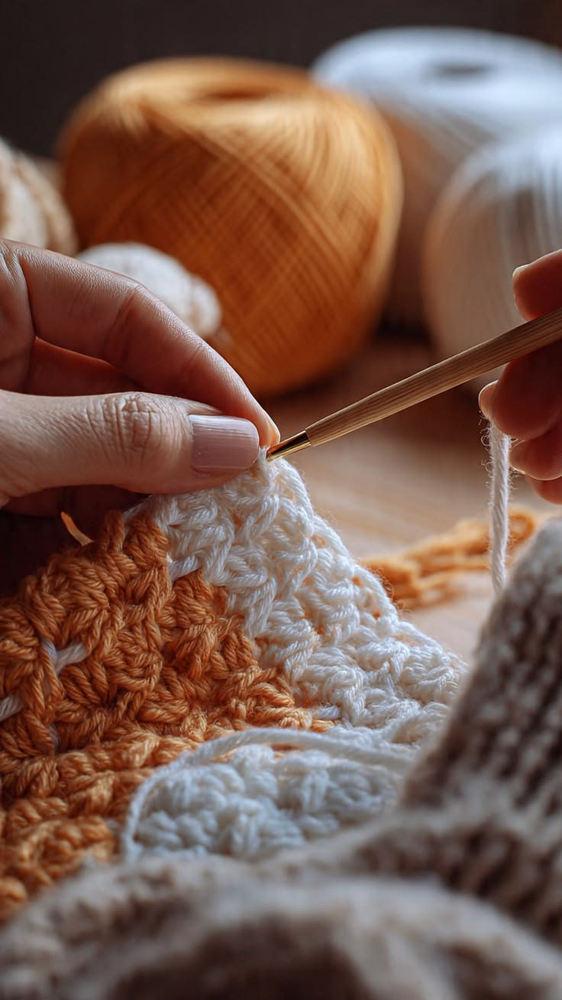

Made to Order


The Atelier

Nodalis pieces are crocheted entirely by hand in Sri Lanka — no two are exactly alike. Each garment is made to order, stitch by stitch, and finished with the care that only handwork allows.
From the first loop to the last, one pair of hands carries the piece through.
Orders & Enquiries
Each piece is made to order. Share the piece you have in mind and we will confirm sizing, yarn, and timing with you personally.
Enquire via WhatsApp or write to us on Instagram — @nodalis.lk